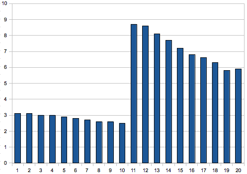

Please note: this article is part of the older "Objective-C era" on Cocoa with Love. I don't keep these articles up-to-date; please be wary of broken code or potentially out-of-date information. Read "A new era for Cocoa with Love" for more.
Sorting an NSMutableArray with a random comparison method
If you sorted an NSMutableArray with a comparison method that randomly returns either higher or lower, would the result be an even, random distribution? Spoiler: no it won't but the actual distribution is interesting nonetheless. I'll show you what would happen if you did sort this way (and also show you how to correctly randomize an array if you did want an even distribution).
Sorting an array
You can sort an NSMutableArray by any logic you want using a comparison method (implemented on the contained objects) and invoking sortUsingSelector: on the array.
What would happen if you sorted an array of numbers using the following category method which returned a random result?
@implementation NSNumber (RandomComparison)
- (NSComparisonResult)randomCompare:(id)other
{
// randomly return either ascending or descending
return (random() % 2) ? NSOrderedAscending : NSOrderedDescending;
}
@endNaively, you might think that the result would be an even, random distribution.
Distribution from a random sort
For an array 20 elements long, sorted using a random comparison, the following is a chart of percentages where the 1st element in the array ended after 1 million runs:
The percentage of times that the original 1st element ended in each position of the final array.
In a proper random distribution, you'd expect the first element to be equally likely to end up in any position. In fact a correct result here should be 5.0% +/- 0.1% for every column.
The actual result reflects traits of NSMutableArray's internal sorting (which I'm presuming uses a sort similar to the CFQSortArray from CoreFoundation.
The biggest feature of the distribution is a fuction of how quicksort works. Between 7 and 40 elements (which this array is), NSMutableArray's sort chooses a single pivot which is most likely to be in the middle of the array. Elements on either half are sorted with respect to each other before sorting with the whole.
This pivot selection causes the huge difference between the distribution in the top and bottom half since elements compared with other elements on their own side of the pivot more often, they are more likely to remain on that half of the pivot.
Quicksort subdivides the array but for subdivided blocks smaller than 7 elements, the NSMutableArray's sort algorithm uses a bubble sort instead of quicksort. Elements 1 to 5 at the far left of the distribution show what happens in this bubble sort case: a bulge in the center of the 1 to 5 range, skewed in the direction of the element's original position (i.e. the bulge is lopsided towards 1).
Let's look at what happens to element 11:
The percentage of times that the original 11th element ended in each position of the final array.
This is not a simple mirror of the previous results but it again follows the quicksort pattern: results from a random sort are most likely to stay in the partition where they began, with minor perturbations on the fringes due to the bubble sort.
The correct way to randomize in-place
If you're interested, the correct way to randomize in-place is:
@implementation NSMutableArray (Randomization)
- (void)randomize
{
NSInteger count = [self count];
for (NSInteger i = 0; i < count - 1; i++)
{
NSInteger swap = random() % (count - i) + i;
[self exchangeObjectAtIndex:swap withObjectAtIndex:i];
}
}
@endA quick summary of what this does:
- conceptually split the array into "used" elements (in their final positions) and "unused" elements (initially, everything is "unused")
- randomly choose an element from the unused elements
- swap the chosen element with the first element in the unused range
- this first position in the unused range is now considered used (i.e. the element is in its final position)
- repeat steps 2 to 4 until all elements are in their final positions
This algorithm is the "Fisher–Yates shuffle" and dates to 1938 (which is an indication of how obvious it is).
If you're truly interested in a perfectly even, random distribution, you may want to use an approach that avoids biases due to modulo (modulo will round down too often for non-binary divisible numbers). You can see one approach for unbiased rounding in this post by Brent Royal-Gordon on StackOverflow. Although if you're really interested in an even distribution, you'll probably want to use a Mersenne-Twister instead of the C random() function.
The reality is that that code I showed is faster than the other options and easily good enough unless you have a strong mathematical need for accuracy (in my tests on 1 million samples, it was evenly distributed to 2 significant figures in all cases).
Conclusion
A quick post this week. I was really just goofing around with comparison methods and thought the results were interesting. In retrospect, its obvious that the results from a sort with a random comparison would be a function of how the sort is performed but I was surprised that the two different kinds of sort (bubble and quick) both had a visible influence on the results.
Of course, there are proper ways to randomize arrays and they're not very difficult — unless you're really fussy about the quality of your random numbers.
Avoiding deadlocks and latency in libdispatch
The design of every Mac application